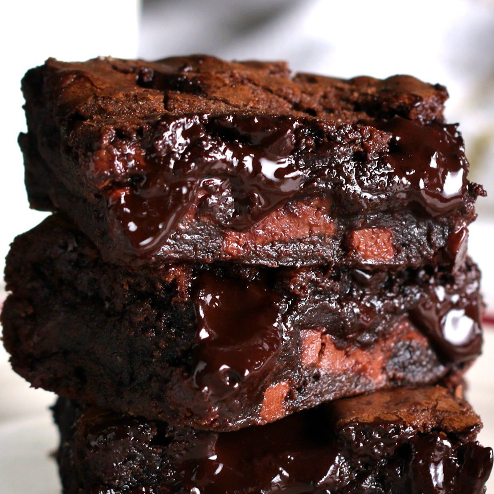

Home
Easy Chocolate Brownies

The secret to really great brownie is using both melted chocolate and cocoa powder, plus butter instead of oil (because butter has way better flavour than oil). The combination of these
plus minimal flour, just enough to make a barely-set batter, and brown sugar rather than white (for extra moisture and chewiness) is what will deliever that perfect rich, fudgy brownie you've been
dreaming about
These dreamy brownies start by melting chocolate and butter together before whisking in eggs and vanilla. Then just mix in flour and coco powder and lastly stir in the let's-pretend-it's-optional chocolate chunks.
Scrape into lined pan and bake!
Ingredients
- 200g / 14 tbsp unsalted butter (1 3/4 US sticks)
- 200g / 1 1/4 cups dark chocolate chips (7oz)
- 1 cup (175g) brown sugar, loosely packed
- 3 eggs, lightly beaten
- 1 tsp vanilla extract
- 1/2 cup (75g) plain flour
- pinch of salt
- 180g / 6oz dark chocolate block/bar (optional), chopped into chunks rather than shards (bittersweet or semi-sweet, cooking chocolate)
Steps
- Preheat oven to 180°C/350°F (160°C fan forced).
- Spray a 20cm/8" square tin with oil and line with baking/parchment paper with overhang
- Place butter and chocolate chips in a heatproof bowl, microwave in 30 second bursts (takes around 1m 30sec) until melted. Stir until smooth
- Add sugar and vanilla, mix, then add eggs and mix well until smooth and molten.
- Add flour, cocoa, salt and stir until smooth. Stir in chopped chocolate, pour into pan.
- Bake 24 minutes for really gooey in the centre, 28 minutes for fudgey but still very moist, 32 minutes for moist fudge-cake-like.
- If you didn't use the extra chocolate for stirring in, reduce cook time by 2 minutes.
- Rest for 10 minutes before lifting out of the pan. Allow to cool for at least 20 minutes before cutting.
Enjoy